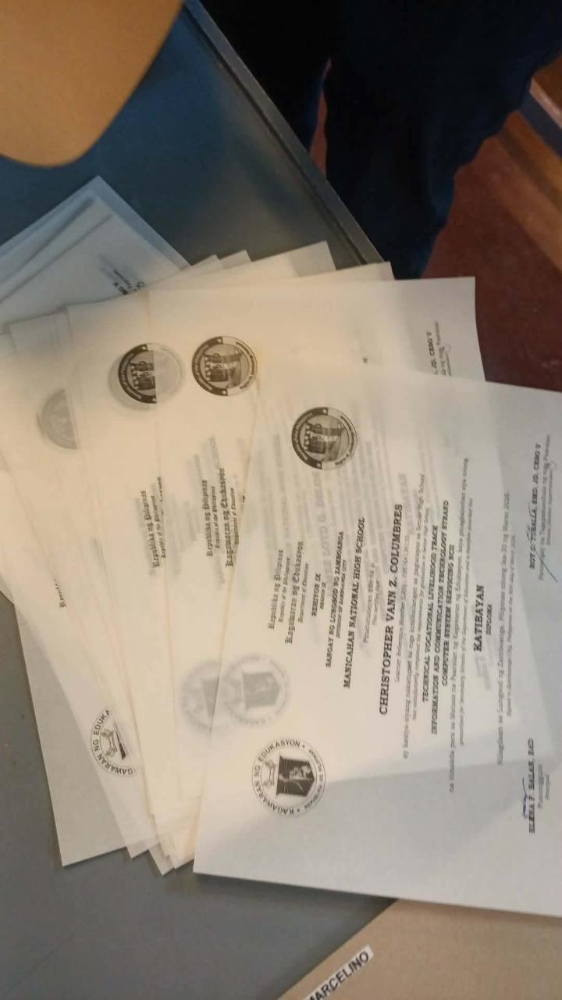
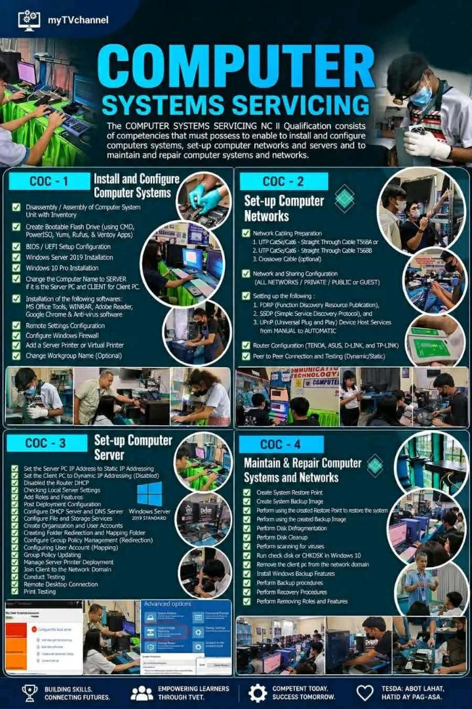

Manicahan National High School
Computer Systems Servicing — CSS Department
Computer Systems Servicing — CSS Department
Celebrating the success of our students and the department's contributions through the years.

Our students receive official recognition and certificates, including the KATIBAYAN — honoring excellence in the Information and Communications Technology (ICT) and Computer Systems Servicing (CSS) strand. These documents represent the hard work, skills, and achievements of our learners as they progress toward graduation and career readiness.

Our Computer Systems Servicing NC II program equips students with industry-standard skills recognized by TESDA. The curriculum covers four core competencies:
Students gain hands-on experience preparing them for national certification and employment in the IT industry.
Recognized by the Division of Zamboanga City for outstanding guidance and counseling practices.
All graduating students successfully transitioned to Senior High School with proper track guidance.
Leadership and Values Formation Program cited as a model initiative in the district.
Selected as one of the model guidance centers in the Division of Zamboanga City.
Manicahan National High School formally recognized as a national institution under DepEd.
Became the first barangay high school in Zamboanga City — a historic milestone.
Established as Manicahan Extension High School — serving the community for over 60 years.